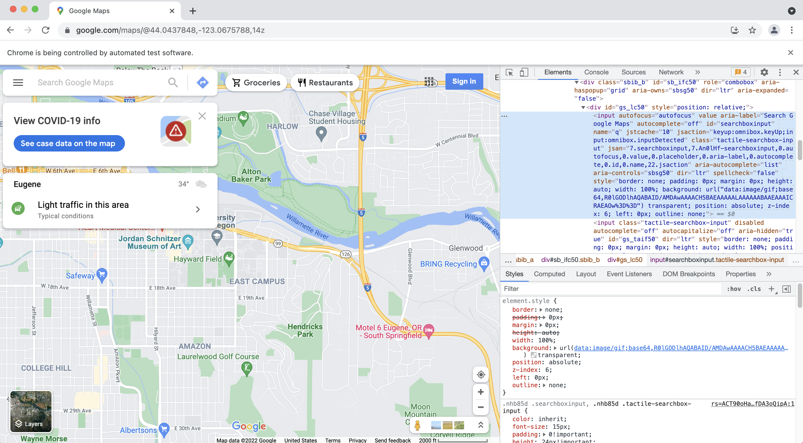
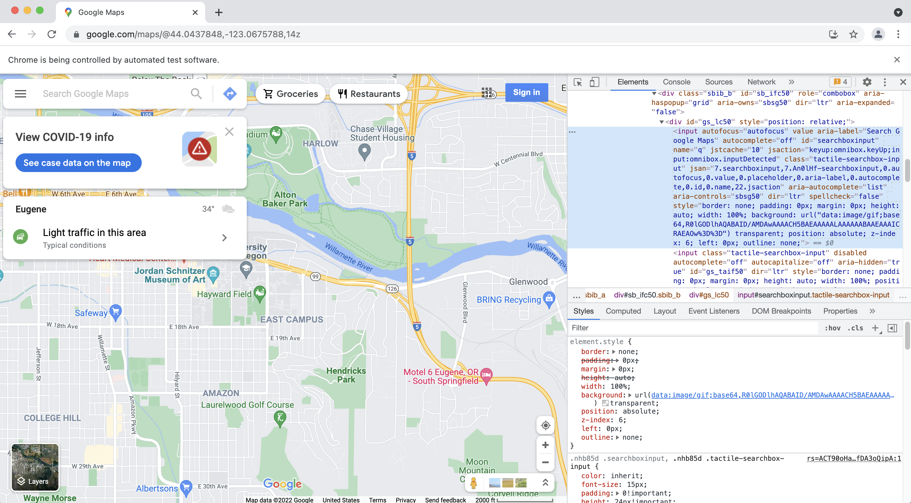

Data access#
Finding, downloading, and cleaning data is an important, but laborious, part of geospatial data science. In this demo, we will download data programmatically using Application Programming Interfaces (APIs). We will also talk about strategies for downloading data when an API is unavailable or insufficient.
APIs#
So far in this course we have mainly been using data that has been downloaded locally from point-and-click GUIs. But it is becoming more and more common to access data programmatically from an online server. These platforms often have a public API that we can use to pull data inside our Python environment.
An API is a type of software that provides a standard set of protocols/functions so that our computer can communicate with other computers (in contrast, a user interface is a type of software that connects a computer to a person)
The basic idea is we send a request (which may include query parameters and access credentials) to an endpoint. That endpoint will return a response code plus the data we asked for. For these kind of tasks, we have to carefully inspect the API documentation to understand what functions are available and what keyword arguments they require.
Many organizations have great APIs because they want people to use their data.
Census Bureau#
The US Census Bureau has a great API that makes demographic, socio-economic and housing statistics more accessible than ever before.
Developers use customize these statistics to create apps that:
Provide a local government a range of socioeconomic statistics on its population.
Show commuting patterns for every city in America.
Display the latest numbers on owners and renters in a neighborhood someone may want to live in.
Many students will use Census Bureau data in their final projects.
CenPy#
CenPy is an interface to explore and query the US Census API in Python. It conveniently returns the data in Pandas Dataframes for further analysis.
We know CenPy is legitimate because it has an active GitHub repository.

More information about this package can be found here.
First we should find how to install it, either using conda or pip depending on which virtual environment manager (conda or venv) we are using.

# Import library
from cenpy import products
import matplotlib.pyplot as plt
Then search the documentation for examples…

acs = products.ACS(2019)
acs
Connection to American Community Survey: 5-Year Estimates: Detailed Tables 5-Year(ID: https://api.census.gov/data/id/ACSDT5Y2019)
With MapServer: Census ACS 2019 WMS
# Find tables containing keyword
acs.filter_tables('POPULATION', by='description')
| description | columns | |
|---|---|---|
| table_name | ||
| B01003 | TOTAL POPULATION | [B01003_001E] |
| B05006 | PLACE OF BIRTH FOR THE FOREIGN-BORN POPULATION... | [B05006_001E, B05006_002E, B05006_003E, B05006... |
| B05007 | PLACE OF BIRTH BY YEAR OF ENTRY BY CITIZENSHIP... | [B05007_001E, B05007_002E, B05007_003E, B05007... |
| B05008 | SEX BY PLACE OF BIRTH BY YEAR OF ENTRY FOR THE... | [B05008_001E, B05008_002E, B05008_003E, B05008... |
| B05013 | SEX BY AGE FOR THE FOREIGN-BORN POPULATION | [B05013_001E, B05013_002E, B05013_003E, B05013... |
| ... | ... | ... |
| C24030 | SEX BY INDUSTRY FOR THE CIVILIAN EMPLOYED POPU... | [C24030_001E, C24030_002E, C24030_003E, C24030... |
| C24040 | SEX BY INDUSTRY FOR THE FULL-TIME, YEAR-ROUND ... | [C24040_001E, C24040_002E, C24040_003E, C24040... |
| C24050 | INDUSTRY BY OCCUPATION FOR THE CIVILIAN EMPLO... | [C24050_001E, C24050_002E, C24050_003E, C24050... |
| C24060 | OCCUPATION BY CLASS OF WORKER FOR THE CIVILIAN... | [C24060_001E, C24060_002E, C24060_003E, C24060... |
| C24070 | INDUSTRY BY CLASS OF WORKER FOR THE CIVILIAN E... | [C24070_001E, C24070_002E, C24070_003E, C24070... |
143 rows × 2 columns
# Print list of tables
acs.filter_variables('B01003')
| label | concept | predicateType | group | limit | predicateOnly | hasGeoCollectionSupport | attributes | required | |
|---|---|---|---|---|---|---|---|---|---|
| B01003_001E | Estimate!!Total | TOTAL POPULATION | int | B01003 | 0 | NaN | NaN | B01003_001EA,B01003_001M,B01003_001MA | NaN |

# Download data
lane_pop = products.ACS(2019).from_county('Lane County, OR',
level='tract',
variables=['B01003_001E']) # don't worry about the deprecation message!
/opt/anaconda3/envs/gds/lib/python3.8/site-packages/cenpy/products.py:762: FutureWarning: The `op` parameter is deprecated and will be removed in a future release. Please use the `predicate` parameter instead.
return self._from_name(county, variables, level, "Counties", **kwargs)
lane_pop.head()
| GEOID | geometry | B01003_001E | NAME | state | county | tract | |
|---|---|---|---|---|---|---|---|
| 0 | 41039000705 | POLYGON ((-13817570.420 5462507.770, -13817562... | 3686.0 | Census Tract 7.05, Lane County, Oregon | 41 | 039 | 000705 |
| 1 | 41039004000 | POLYGON ((-13705354.030 5475460.590, -13705335... | 2473.0 | Census Tract 40, Lane County, Oregon | 41 | 039 | 004000 |
| 2 | 41039003000 | POLYGON ((-13704040.350 5477214.460, -13704036... | 4542.0 | Census Tract 30, Lane County, Oregon | 41 | 039 | 003000 |
| 3 | 41039001202 | POLYGON ((-13712723.380 5432343.990, -13712713... | 4178.0 | Census Tract 12.02, Lane County, Oregon | 41 | 039 | 001202 |
| 4 | 41039004900 | POLYGON ((-13700806.520 5470431.210, -13700788... | 4741.0 | Census Tract 49, Lane County, Oregon | 41 | 039 | 004900 |
# Compute population density
lane_pop['pop_density'] = lane_pop['B01003_001E'] / (lane_pop['geometry'].area / 1e+6)
from mpl_toolkits.axes_grid1 import make_axes_locatable
# Plot map
f, ax = plt.subplots(1, 1, figsize=(10,10))
# These two lines make the colorbar the same size as the axes.
divider = make_axes_locatable(ax)
cax = divider.append_axes("right", size="5%", pad=0.1)
lane_pop.plot('pop_density', ax=ax, legend=True, cax=cax)
<AxesSubplot:>

USGS hydrologic data#
Let’s have a look at another API called dataretrieval which was developed by USGS to retrieve hydrologic data.

On the GitHub REAMDE.md for this package it says we can also install dataretrieval using conda or pip.

%%capture
# Install package
!pip install -U dataretrieval
Now we can look through the documentation and test some examples
# Import the functions for downloading data from NWIS
import dataretrieval.nwis as nwis
# Specify the USGS site code
site = '03339000'
# Get instantaneous values (iv)
df = nwis.get_record(sites=site, service='dv', start='2020-10-01', end='2021-09-30')
df.head()
| 00010_Mean | 00010_Mean_cd | site_no | 00060_Mean | 00060_Mean_cd | 00065_Mean | 00065_Mean_cd | 00095_Mean | 00095_Mean_cd | 00300_Minimum | ... | 63680_ysi_Mean | 63680_ysi_Mean_cd | 91049_Mean | 91049_Mean_cd | 99133_Maximum | 99133_Maximum_cd | 99133_Minimum | 99133_Minimum_cd | 99133_Mean | 99133_Mean_cd | |
|---|---|---|---|---|---|---|---|---|---|---|---|---|---|---|---|---|---|---|---|---|---|
| datetime | |||||||||||||||||||||
| 2020-10-01 00:00:00+00:00 | 14.9 | A | 03339000 | 75.7 | A | 2.04 | A | 672.0 | A | 8.9 | ... | 3.7 | A | 1510.0 | P | 4.1 | A | 3.3 | A | 3.7 | A |
| 2020-10-02 00:00:00+00:00 | 14.5 | A | 03339000 | 66.0 | A | 1.99 | A | 678.0 | A | 9.2 | ... | 3.6 | A | 1450.0 | P | 4.2 | A | 3.8 | A | 4.1 | A |
| 2020-10-03 00:00:00+00:00 | 14.2 | A | 03339000 | 60.2 | A | 1.96 | A | 678.0 | A | 9.4 | ... | 3.2 | A | 1110.0 | P | 3.8 | A | 3.0 | A | 3.4 | A |
| 2020-10-04 00:00:00+00:00 | 14.4 | A | 03339000 | 68.8 | A | 2.01 | A | 705.0 | A | 9.1 | ... | 3.3 | A | 1030.0 | P | 3.0 | A | 2.6 | A | 2.8 | A |
| 2020-10-05 00:00:00+00:00 | 13.4 | A | 03339000 | 66.8 | A | 1.99 | A | 718.0 | A | 9.6 | ... | 3.1 | A | 1080.0 | P | 3.4 | A | 2.7 | A | 3.0 | A |
5 rows × 59 columns
# Plot
f, ax = plt.subplots(1, 1, figsize=(10,4))
ax.plot(df['00060_Mean'])
[<matplotlib.lines.Line2D at 0x7fc731f81b50>]

Tips for APIs#
Take a minute to make sure that package is used (e.g. lots of forks, stars) and up-to-date (e.g. last commit)
Read the
docs,demos,examplesand hope we find what we’re looking for (sometimes they are not that comprehensive)If you can’t find what you’re looking for, inspect the source code (
.pyfiles)
API limits#
Often APIs are sometimes not available or have limitations. Technology companies hoard data to secure market dominance. But this is a problem because, by guarding data, they are also preventing it being used for good causes. Without access to their data it is difficult to tell whether they are in compliance.


Web scraping#
Since web pages are usually organized in a specfic way, we can still download data from them.
Web scraping (also known as crawling or harvesting) is the practice of automatically gathering data from the internet without the use of an API
Most commonly accomplished by writing a program that queries a web server, requests data (usually in the form of HTML), and parses that data to extract information


Suppose a friend wanted to do this?#
requests: standard Python library for requesting data from the webBeautifulSoup: a library for pulling data out of HTML and XML filesselenium: is a library for performing web browser automation
requests#
A lot of data on Wikipedia is contained in HTML tables which have the following syntax.
The table itself starts with the
<table>tag and finishes with</table>Table rows start with the
<tr>tag and finish with</tr>Table headers start with the
<th>tag and finish with</th>Table data start with the
<td>tag and finish with</td>
The table below, showing some of the biggest soccer clubs in the world, is an example of a simple HTML table.
| Team | Manager | Country |
|---|---|---|
| Real Madrid | Carlo Ancelotti | Spain |
| Bayern Munich | Julian Nagelsmann | Germany |
| Hull City | Liam Rosenior | England |
| Paris Saint-Germain | Christophe Galtier | France |

# Import packages
import requests
# Open a webpage
html = requests.get('https://en.wikipedia.org/wiki/Climate_of_Oregon')
# HTML
html
<Response [200]>


BeautifulSoup4#
Now we could write a program to parse this HTML code (i.e. split into useful blocks)…
…or we could use another package called
BeautifulSoup(also known asbs4) a Python library for parsing data out of HTML and XML files

# Import package
from bs4 import BeautifulSoup, SoupStrainer
# Read HTML content as "soup object" and define default parser
soup = BeautifulSoup(html.text, 'html.parser')
Parse HTML#
The .find and .find_all are the most common methods we will use. They can be used to filter HTML code to find a list of tags or tags with specific attributes.
# Define heading tags
heading_tags = ["h1", "h2"]
# Find heading tags in HTML code
headings = soup.find_all(heading_tags)
# Loop over every heading and print text
for tags in headings:
print(tags.name + ' -> ' + tags.text.strip())
h2 -> Contents
h1 -> Climate of Oregon
h2 -> Precipitation[edit]
h2 -> Temperature[edit]
h2 -> Selected climate charts[edit]
h2 -> See also[edit]
h2 -> References[edit]
# Find every hyperlink
links = soup.find_all('a')
# Loop over every link and print hyperlink
for link in links[0:10]:
print(link.get('href'))
#bodyContent
/wiki/Main_Page
/wiki/Special:Search
/w/index.php?title=Special:CreateAccount&returnto=Climate+of+Oregon
/w/index.php?title=Special:UserLogin&returnto=Climate+of+Oregon
/w/index.php?title=Special:CreateAccount&returnto=Climate+of+Oregon
/w/index.php?title=Special:UserLogin&returnto=Climate+of+Oregon
/wiki/Help:Introduction
/wiki/Special:MyContributions
/wiki/Special:MyTalk
# Find number of images on page
len(soup.find_all('img'))
24
# Print details of first image
print(soup.find_all('img')[5])
<img class="thumbimage" data-file-height="1206" data-file-width="776" decoding="async" height="342" src="//upload.wikimedia.org/wikipedia/commons/thumb/8/80/Oregon_Average_Annual_Precipitation_%281961-1990%29_Map.png/220px-Oregon_Average_Annual_Precipitation_%281961-1990%29_Map.png" srcset="//upload.wikimedia.org/wikipedia/commons/thumb/8/80/Oregon_Average_Annual_Precipitation_%281961-1990%29_Map.png/330px-Oregon_Average_Annual_Precipitation_%281961-1990%29_Map.png 1.5x, //upload.wikimedia.org/wikipedia/commons/thumb/8/80/Oregon_Average_Annual_Precipitation_%281961-1990%29_Map.png/440px-Oregon_Average_Annual_Precipitation_%281961-1990%29_Map.png 2x" width="220"/>
# Find attributes of first image
print(soup.find_all('img')[5].attrs['src'])
//upload.wikimedia.org/wikipedia/commons/thumb/8/80/Oregon_Average_Annual_Precipitation_%281961-1990%29_Map.png/220px-Oregon_Average_Annual_Precipitation_%281961-1990%29_Map.png
# Download image
url = 'https://' + soup.find_all('img')[5].attrs['src'][2:]
response = requests.get(url)
if response.status_code == 200:
with open("images/test_image.jpg", 'wb') as f:
f.write(response.content)
# Import packages
import matplotlib.pyplot as plt
import matplotlib.image as mpimg
# Read image
img = mpimg.imread('images/test_image.jpg')
# Plot image
plt.imshow(img)
<matplotlib.image.AxesImage at 0x7fc6e846cd30>

Selenium#
Sometimes we want even more control…
Selenium is a package for performing web browser automation
We can use Selenium to enter text in search boxes, click buttons etc.

%%capture
# Install webdriver_manager: https://github.com/SergeyPirogov/webdriver_manager
!pip3 install webdriver_manager
# Import packages
from selenium import webdriver
from selenium.webdriver.chrome.service import Service
from selenium.webdriver.common.by import By
from webdriver_manager.chrome import ChromeDriverManager
# Install Chrome webdriver
driver = webdriver.Chrome(service=Service(ChromeDriverManager().install()))
# Open a web browser at the following page
driver.get("https://www.google.com/maps")
[WDM] - Downloading: 100%|███████████████████████████████████████████████████████████████████████████████████████████████████████████████████████████████████████████████████████████████████| 8.82M/8.82M [00:00<00:00, 32.3MB/s]
 

{kind=link}
# Enter some text in the search box
inputElement = driver.find_element(By.ID, "searchboxinput")
inputElement.send_keys('South Sister Oregon')

# Click search button
element = driver.find_element(By.ID, "searchbox-searchbutton")
element.click()